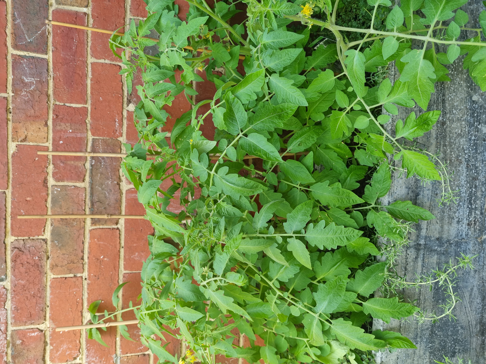

3/12
I put Kumara on her little leash and we went out onto the street.
It was around mid-afternoon. When we walk, especially when it's sunny, we don't really travel.
Kumara likes to take her time sniffing the bushes.
Because I take her for little walks all the time, she doesn't really get startled by street cleaners or whatever anymore.
__..--''``---....___ _..._ __
/// //_.-' .-/"; ` ``<._ ``.''_ `. / // /
///_.-' _..--.'_ \ `( ) ) // //
/ (_..-' // (< _ ;_..__ ; `' / ///
/ // // // `-._,_)' // / ``--...____..-' /// / //
The concrete was warm so Kumara rolled over on it. She loves getting little bits of twigs and leaves in her fur. No one is as good at doing nothing as a little cat who has no idea what the world is. Kumara, for all she knows, is the last cat alive.
It doesn't seem to worry her. Her little walks, sniffing the concrete and me are all she needs.

September Tomatoes
Karina Borowicz
The whiskey stink of rot has settled
in the garden, and a burst of fruit flies rises
when I touch the dying tomato plants.
Still, the claws of tiny yellow blossoms
flail in the air as I pull the vines up by the roots
and toss them in the compost.
It feels cruel. Something in me isn’t ready
to let go of summer so easily. To destroy
what I’ve carefully cultivated all these months.
Those pale flowers might still have time to fruit.
My great-grandmother sang with the girls of her village
as they pulled the flax. Songs so old
and so tied to the season that the very sound
seemed to turn the weather.
I read that Borowicz poem a year ago, and since then, I've been planting tomatoes on the sidewalk outside my building. Tomato plants have a particular smell - a not quite tomato-ness. A precursor to tomato-ness.
"We are not yet tomatoes". hahaha.
For Brorwicz, the yearly uprooting of the tomatoes contextualises her in a generational practice of landkeeping and harvest. Rather than the seasons determining the actions of her great-grandmother's community of girls, it is their actions that determine the seasons. Seasonal cycles of harvest, and humans, are as much a part of the land as the -
I picked Kumara up to keep walking.